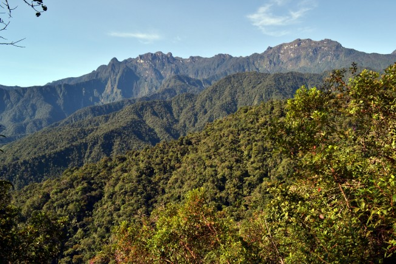
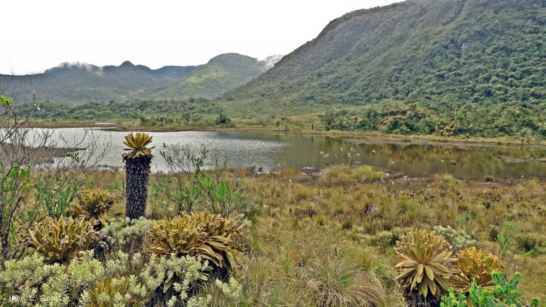

Parque Nacional Natural Tatamá
Risaralda, Colombia




Descripción
El Páramo Tatamá es un páramo colombiano situado sobre los 4200 m s. n. m. y está ubicado en la Cordillera Occidental, entre los departamentos de Chocó, Valle del Cauca y Risaralda. Es un área protegida que alberga una rica biodiversidad y ecosistemas únicos, siendo un importante centro de conservación natural.
Características
- 🏔️ Páramo de alta montaña
- 🌿 Ecosistemas únicos
- 🦜 Rica biodiversidad
- 🚶♂️ Senderos ecológicos
- 💧 Fuentes hídricas
- 🌲 Bosques nativos
- 🦅 Observación de aves
Horarios y Precios
Horario:
6:00 AM - 4:00 PM
Días:
Todos los días (con permiso previo)
Nota importante:
Se requiere autorización de Parques Nacionales
Aviso Importante
Por ser una reserva natural protegida, no hay servicios de restaurante dentro del parque. Se recomienda llevar provisiones y agua suficiente para la visita.
Alojamientos cercanos
-
Hotel Santuario Plaza
- Ubicación: Centro de Santuario, Risaralda
- Habitaciones amplias y confortables
- Cerca de atractivos culturales
-
Finca Montezuma
- Ubicación: Entrada del parque
- Servicios de guías disponibles
- Ideal para senderismo
-
LA CASONA Finca Hostal
- Ubicación: Santuario
- Calificación excepcional
- Experiencia auténtica y acogedora
-
Glamping La Cabañita Santuario
- Alojamiento único en entorno natural
- Ideal para escapadas románticas
- Perfecto para familias
-
Hotel Junior Plaza
- Ubicación: Santuario
- Precios accesibles
- Habitaciones cómodas
Recomendaciones
- 🎒 Llevar suficiente agua y alimentos
- 🧥 Ropa adecuada para clima frío y lluvia
- 📝 Tramitar permisos con anticipación
- 🦺 Contratar guías certificados
- 📱 Llevar equipo de comunicación